Candidate List 20260510 Previous Day Next Day Section 1: New Sources (age<1d) Cosmological Afterglow
Section 2: Old (1-5d) sources observed last night placeholder
Section 1: New Afterglow/FBOT Cands Last Night (1)
1. ZTF26aavrsod (Afterglow?) [Back to Top] [Share] [Trigger Swift] [Fritz ] [Lasair ]RA, Dec: 242.92378, -24.06626 16h11m41.71s, -24d-3m-58.53sGalactic (l, b): 350.94051, 19.61509 WARNING: -2.91 deg from ecliptic plane ext(g-r) = 0.27 Consistent with synchrotron, g-r>0!
Section 2: Older Sources Observed Last Night (36)
0. ZTF26aauvxxu (FBOT?) [Back to Top] [Share] [Trigger Swift] [Fritz ] [Lasair ]RA, Dec: 218.41324, 62.88806 14h33m39.18s, 62d53m17.00sGalactic (l, b): 104.92345, 50.51572 ext(g-r) = 0.016peak abs mag = -24.10 PS1: 1 source in 3 arcsec Closest: d = 0.26 arcsec photoz=0.70+/-0.18 peak abs mag = -23.72
1. ZTF26aauvzgh (Afterglow?) [Back to Top] [Share] [Trigger Swift] [Fritz ] [Lasair ]RA, Dec: 209.79567, 47.25993 13h59m10.96s, 47d15m35.75sGalactic (l, b): 93.99559, 65.8823 ext(g-r) = 0.021peak abs mag = -19.10 PS1: 1 source in 3 arcsec Closest: d = 0.45 arcsec photoz=0.11+/-0.02 peak abs mag = -18.91 Consistent with synchrotron, g-r>0!
2. ZTF26aauwcjy (FBOT?) [Back to Top] [Share] [Trigger Swift] [Fritz ] [Lasair ]RA, Dec: 220.9962, 7.38317 14h43m59.09s, 7d22m59.41sGalactic (l, b): 1.62741, 56.81446 ext(g-r) = 0.031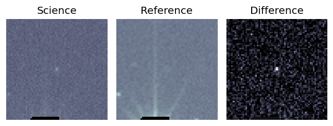
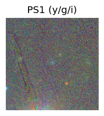
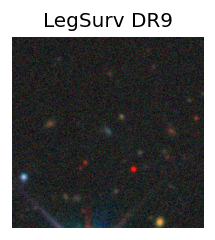
peak abs mag = -21.95 LegacySurvey: 1 sources in 3 arcsec Closest: d = 0.35 arcsec, 11.9 deg (east of north) photoz=0.22 (68% bounds 0.16, 0.38), type=EXP peak abs mag = -20.39 (68% bounds -19.62, -21.82) 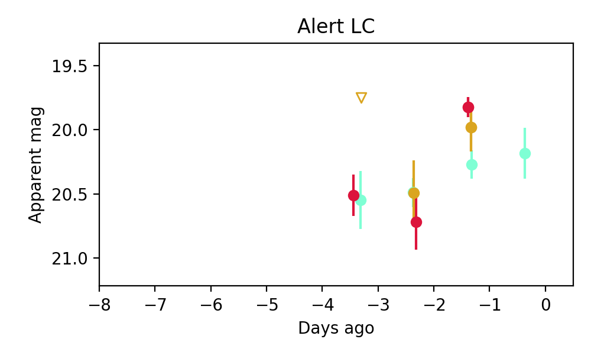
Consistent with synchrotron, g-r>0!
3. ZTF26aauwlfi (Afterglow?) [Back to Top] [Share] [Trigger Swift] [Fritz ] [Lasair ]RA, Dec: 171.17128, 66.35516 11h24m41.11s, 66d21m18.57sGalactic (l, b): 135.86682, 48.53662 ext(g-r) = 0.011peak abs mag = -17.81 PS1: 1 source in 3 arcsec Closest: d = 2.92 arcsec photoz=0.08+/-0.01 peak abs mag = -18.34 Consistent with synchrotron, g-r>0!
4. ZTF26aauxapg (Afterglow?) [Back to Top] [Share] [Trigger Swift] [Fritz ] [Lasair ]RA, Dec: 218.91377, 38.34961 14h35m39.31s, 38d20m58.59sGalactic (l, b): 66.77176, 65.49905 ext(g-r) = 0.012peak abs mag = -19.14 PS1: 1 source in 3 arcsec Closest: d = 0.40 arcsec photoz=0.14+/-0.02 peak abs mag = -19.19
5. ZTF26aauxbav (Afterglow?FBOT?) [Back to Top] [Share] [Trigger Swift] [Fritz ] [Lasair ]RA, Dec: 226.45993, 53.27188 15h 5m50.38s, 53d16m18.76sGalactic (l, b): 88.68906, 53.97552 ext(g-r) = 0.015peak abs mag = -20.39 PS1: 1 source in 3 arcsec Closest: d = 0.35 arcsec photoz=0.21+/-0.09 peak abs mag = -20.11
6. ZTF26aauxdkn (Afterglow?) [Back to Top] [Share] [Trigger Swift] [Fritz ] [Lasair ]RA, Dec: 252.68983, 22.35518 16h50m45.56s, 22d21m18.64sGalactic (l, b): 41.9269, 35.95084 ext(g-r) = 0.058peak abs mag = -19.44 LegacySurvey: 1 sources in 3 arcsec Closest: d = 0.11 arcsec, 10.1 deg (east of north) photoz=0.1 (68% bounds 0.09, 0.11), type=SER peak abs mag = -18.96 (68% bounds -18.7, -19.17)
7. ZTF26aauxhbp (Afterglow?) [Back to Top] [Share] [Trigger Swift] [Fritz ] [Lasair ]RA, Dec: 265.46529, 10.75192 17h41m51.67s, 10d45m6.90sGalactic (l, b): 34.89372, 20.2705 ext(g-r) = 0.166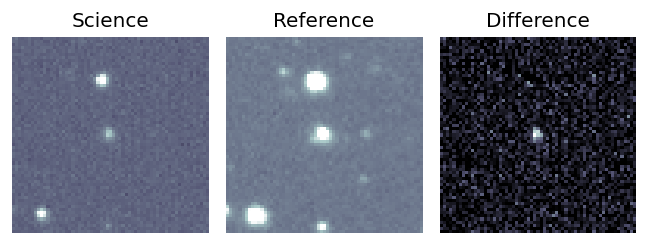
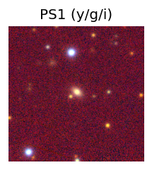
PS1: 1 source in 3 arcsec Closest: d = 0.46 arcsec photoz=0.11+/-0.01 peak abs mag = -19.66 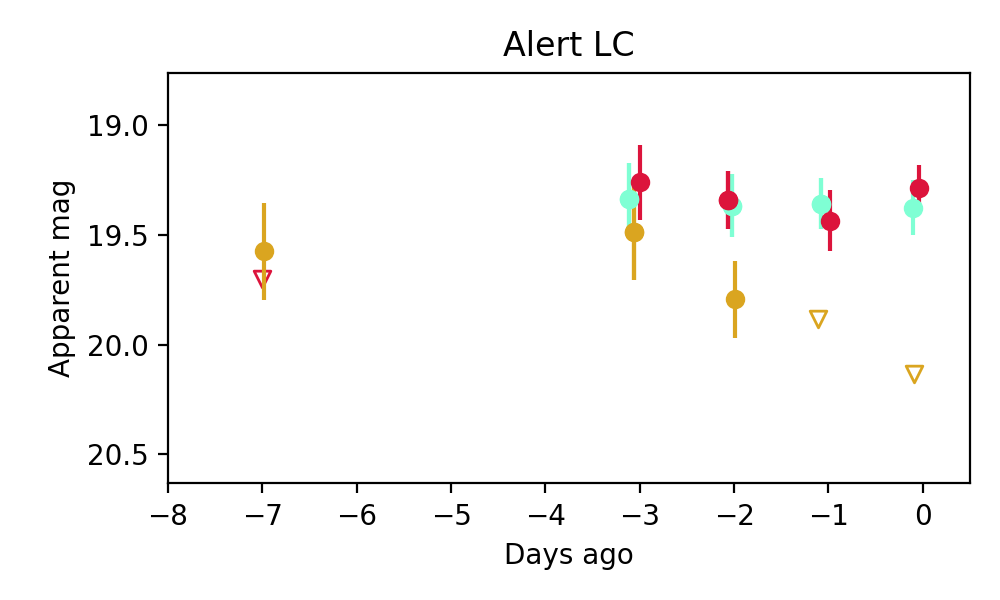
Consistent with synchrotron, g-r>0!
8. ZTF26aauywkk (FBOT?) [Back to Top] [Share] [Trigger Swift] [Fritz ] [Lasair ]RA, Dec: 122.90902, 42.37318 8h11m38.17s, 42d22m23.45sGalactic (l, b): 178.02171, 32.18974 ext(g-r) = 0.053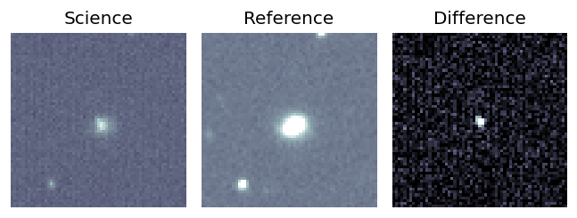
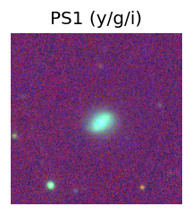
peak abs mag = -19.31 PS1: 1 source in 3 arcsec Closest: d = 2.20 arcsec photoz=0.10+/-0.01 peak abs mag = -19.82 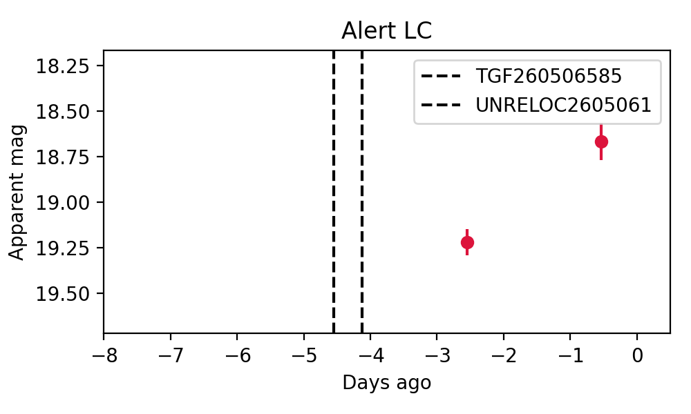
9. ZTF26aauznqj (FBOT?) [Back to Top] [Share] [Trigger Swift] [Fritz ] [Lasair ]RA, Dec: 170.7277, -12.22031 11h22m54.65s, -12d-13m-13.11sGalactic (l, b): 271.44681, 45.17104 ext(g-r) = 0.045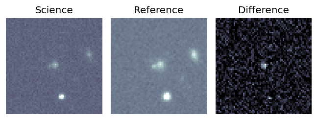
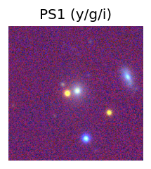
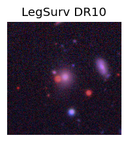
peak abs mag = -19.30 LegacySurvey: 1 sources in 3 arcsec Closest: d = 0.85 arcsec, 318.8 deg (east of north) photoz=0.13 (68% bounds 0.12, 0.14), type=SER peak abs mag = -19.6 (68% bounds -19.45, -19.74) 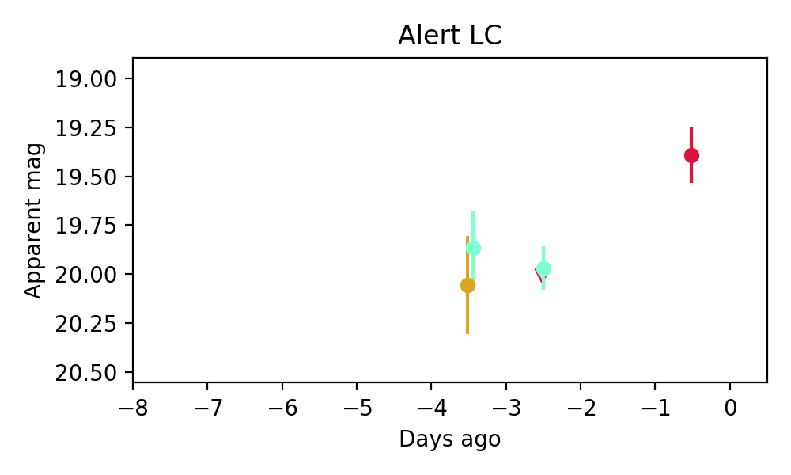
Consistent with synchrotron, g-r>0!
10. ZTF26aauzske (FBOT?) [Back to Top] [Share] [Trigger Swift] [Fritz ] [Lasair ]RA, Dec: 137.30653, 72.88366 9h 9m13.57s, 72d53m1.16sGalactic (l, b): 140.32799, 35.72885 ext(g-r) = 0.035PS1: 1 source in 3 arcsec Closest: d = 0.90 arcsec photoz=0.18+/-0.05 peak abs mag = -20.23
11. ZTF26aavbyhm (FBOT?) [Back to Top] [Share] [Trigger Swift] [Fritz ] [Lasair ]RA, Dec: 222.84002, 14.61627 14h51m21.61s, 14d36m58.57sGalactic (l, b): 14.87881, 59.43129 ext(g-r) = 0.026peak abs mag = -20.22 LegacySurvey: 1 sources in 3 arcsec Closest: d = 0.66 arcsec, 256.5 deg (east of north) photoz=0.14 (68% bounds 0.13, 0.16), type=PSF peak abs mag = -19.63 (68% bounds -19.44, -19.84)
12. ZTF26aavedji (FBOT?) [Back to Top] [Share] [Trigger Swift] [Fritz ] [Lasair ]RA, Dec: 209.30404, -17.25626 13h57m12.97s, -17d-15m-22.53sGalactic (l, b): 324.56518, 42.83542 WARNING: -4.95 deg from ecliptic plane ext(g-r) = 0.089LegacySurvey: 1 sources in 3 arcsec Closest: d = 0.47 arcsec, 276.0 deg (east of north) photoz=0.11 (68% bounds 0.1, 0.13), type=SER peak abs mag = -19.42 (68% bounds -19.08, -19.7)
13. ZTF26aaveiqd (Afterglow?) [Back to Top] [Share] [Trigger Swift] [Fritz ] [Lasair ]RA, Dec: 276.90183, 7.40283 18h27m36.44s, 7d24m10.19sGalactic (l, b): 36.86065, 8.64755 ext(g-r) = 0.255
14. ZTF26aaveyho (Afterglow?) [Back to Top] [Share] [Trigger Swift] [Fritz ] [Lasair ]RA, Dec: 233.98178, 8.73671 15h35m55.63s, 8d44m12.14sGalactic (l, b): 15.48241, 47.04732 ext(g-r) = 0.044peak abs mag = -16.94 Consistent with synchrotron, g-r>0!
15. ZTF26aavhyhk (FBOT?) [Back to Top] [Share] [Trigger Swift] [Fritz ] [Lasair ]RA, Dec: 212.43716, -9.26567 14h 9m44.92s, -9d-15m-56.42sGalactic (l, b): 333.17164, 48.95343 WARNING: 3.6 deg from ecliptic plane ext(g-r) = 0.042LegacySurvey: 1 sources in 3 arcsec Closest: d = 3.77 arcsec, 229.3 deg (east of north) photoz=0.14 (68% bounds 0.06, 0.28), type=EXP peak abs mag = -19.66 (68% bounds -17.67, -21.32) Consistent with synchrotron, g-r>0!
16. ZTF26aavktva (Afterglow?FBOT?) [Back to Top] [Share] [Trigger Swift] [Fritz ] [Lasair ]RA, Dec: 233.88066, 8.96581 15h35m31.36s, 8d57m56.92sGalactic (l, b): 15.69702, 47.25022 ext(g-r) = 0.041peak abs mag = -19.62 LegacySurvey: 1 sources in 3 arcsec Closest: d = 0.63 arcsec, 166.7 deg (east of north) photoz=0.13 (68% bounds 0.11, 0.13), type=SER peak abs mag = -19.72 (68% bounds -19.52, -19.88) Consistent with synchrotron, g-r>0!
17. ZTF26aavlgre (Afterglow?) [Back to Top] [Share] [Trigger Swift] [Fritz ] [Lasair ]RA, Dec: 253.93275, 30.49786 16h55m43.86s, 30d29m52.31sGalactic (l, b): 52.06492, 37.03738 ext(g-r) = 0.036peak abs mag = -19.06 LegacySurvey: 1 sources in 3 arcsec Closest: d = 0.44 arcsec, 192.4 deg (east of north) photoz=0.1 (68% bounds 0.08, 0.13), type=SER peak abs mag = -18.55 (68% bounds -18.07, -19.02) Consistent with synchrotron, g-r>0!
18. ZTF26aavmuel (FBOT?) [Back to Top] [Share] [Trigger Swift] [Fritz ] [Lasair ]RA, Dec: 155.19101, 8.64257 10h20m45.84s, 8d38m33.27sGalactic (l, b): 233.20011, 49.90702 WARNING: -1.56 deg from ecliptic plane ext(g-r) = 0.037peak abs mag = -18.39 LegacySurvey: 1 sources in 3 arcsec Closest: d = 1.86 arcsec, 39.2 deg (east of north) photoz=0.14 (68% bounds 0.03, 0.21), type=EXP peak abs mag = -19.45 (68% bounds -16.18, -20.53) Consistent with synchrotron, g-r>0!
19. ZTF26aavnosp (Afterglow?) [Back to Top] [Share] [Trigger Swift] [Fritz ] [Lasair ]RA, Dec: 188.41003, 12.03505 12h33m38.41s, 12d 2m6.16sGalactic (l, b): 286.60667, 74.33995 ext(g-r) = 0.041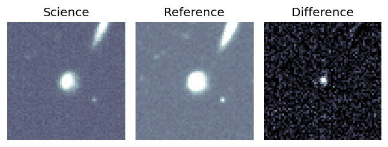
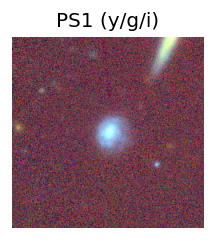
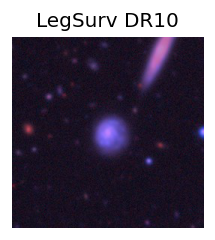
peak abs mag = -17.15 LegacySurvey: 1 sources in 3 arcsec Closest: d = 0.40 arcsec, 183.6 deg (east of north) photoz=0.08 (68% bounds 0.06, 0.09), type=SER peak abs mag = -17.05 (68% bounds -16.42, -17.51) 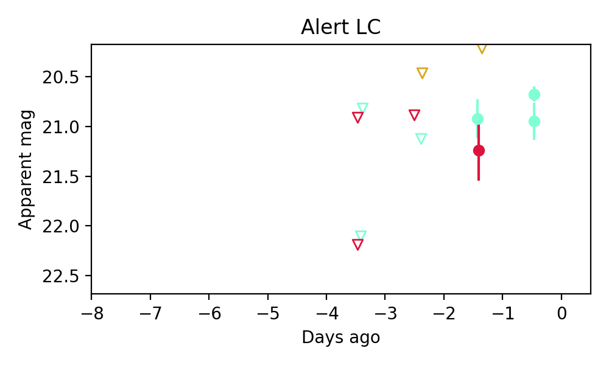
Consistent with synchrotron, g-r>0!
20. ZTF26aavpjnt (FBOT?) [Back to Top] [Share] [Trigger Swift] [Fritz ] [Lasair ]RA, Dec: 191.69005, 15.58915 12h46m45.61s, 15d35m20.92sGalactic (l, b): 297.31678, 78.40986 ext(g-r) = 0.028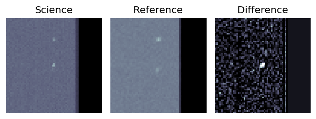
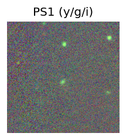
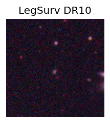
peak abs mag = -22.12 LegacySurvey: 1 sources in 3 arcsec Closest: d = 0.35 arcsec, 344.2 deg (east of north) photoz=0.8 (68% bounds 0.56, 1.13), type=PSF peak abs mag = -23.87 (68% bounds -22.96, -24.81) 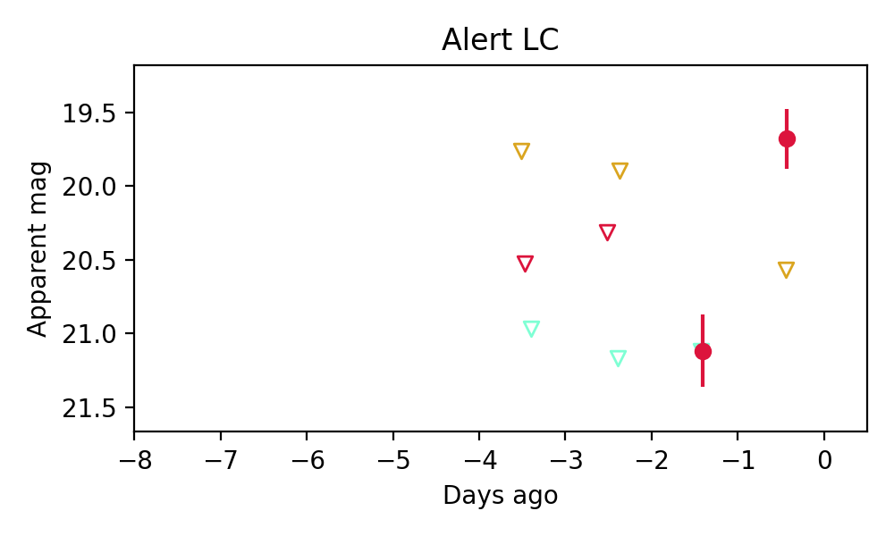
21. ZTF26aavppgu (Afterglow?) [Back to Top] [Share] [Trigger Swift] [Fritz ] [Lasair ]RA, Dec: 183.83334, 1.9098 12h15m20.00s, 1d54m35.28sGalactic (l, b): 282.47899, 63.33876 WARNING: 3.28 deg from ecliptic plane ext(g-r) = 0.026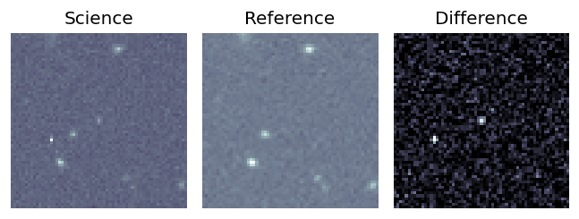
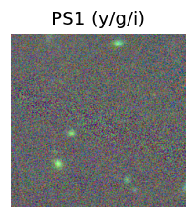
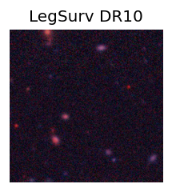
LegacySurvey: 1 sources in 3 arcsec Closest: d = 2.62 arcsec, 212.6 deg (east of north) photoz=0.62 (68% bounds 0.49, 0.93), type=PSF peak abs mag = -21.5 (68% bounds -20.9, -22.58) 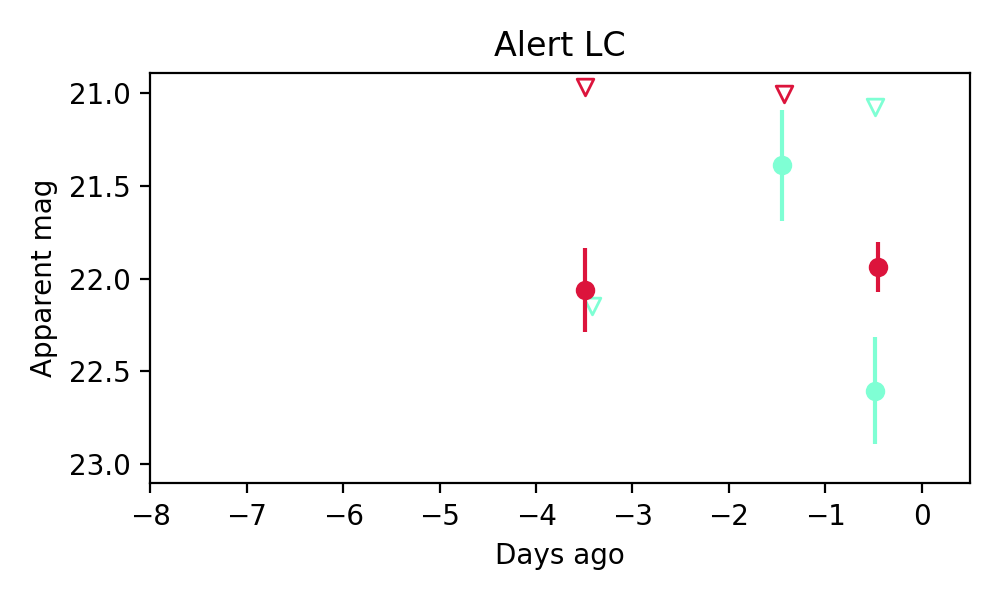
Consistent with synchrotron, g-r>0!
22. ZTF26aavpuvh (Afterglow?) [Back to Top] [Share] [Trigger Swift] [Fritz ] [Lasair ]RA, Dec: 203.109, 44.81942 13h32m26.16s, 44d49m9.90sGalactic (l, b): 100.7168, 70.49876 ext(g-r) = 0.016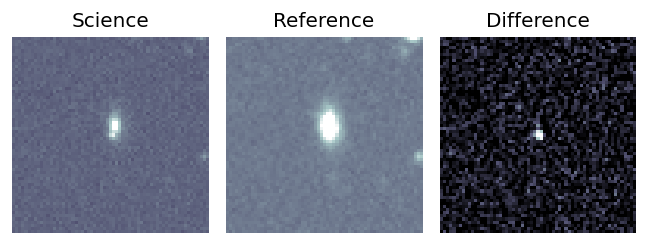
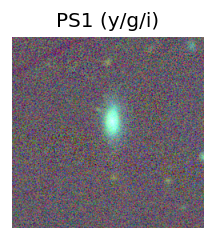
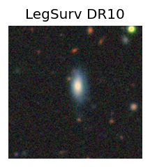
peak abs mag = -18.35 PS1: 1 source in 3 arcsec Closest: d = 1.71 arcsec photoz=0.12+/-0.01 peak abs mag = -18.90 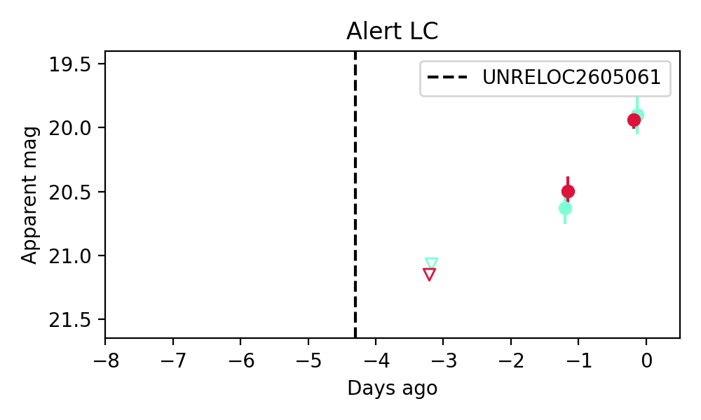
Consistent with synchrotron, g-r>0!
23. ZTF26aavqbzd (Afterglow?FBOT?) [Back to Top] [Share] [Trigger Swift] [Fritz ] [Lasair ]RA, Dec: 206.76805, -1.72251 13h47m4.33s, -1d-43m-21.03sGalactic (l, b): 330.04933, 58.18963 ext(g-r) = 0.044peak abs mag = -20.11 LegacySurvey: 1 sources in 3 arcsec Closest: d = 0.40 arcsec, 292.0 deg (east of north) photoz=0.14 (68% bounds 0.12, 0.19), type=SER peak abs mag = -19.19 (68% bounds -18.71, -19.89) Consistent with synchrotron, g-r>0!
24. ZTF26aavqdbg (Afterglow?) [Back to Top] [Share] [Trigger Swift] [Fritz ] [Lasair ]RA, Dec: 203.39262, -20.63455 13h33m34.23s, -20d-38m-4.38sGalactic (l, b): 316.0661, 41.1602 ext(g-r) = 0.087 Consistent with synchrotron, g-r>0!
25. ZTF26aavqhxn (Afterglow?) [Back to Top] [Share] [Trigger Swift] [Fritz ] [Lasair ]RA, Dec: 220.65391, -12.44466 14h42m36.94s, -12d-26m-40.77sGalactic (l, b): 340.79535, 42.10921 WARNING: 3.17 deg from ecliptic plane ext(g-r) = 0.071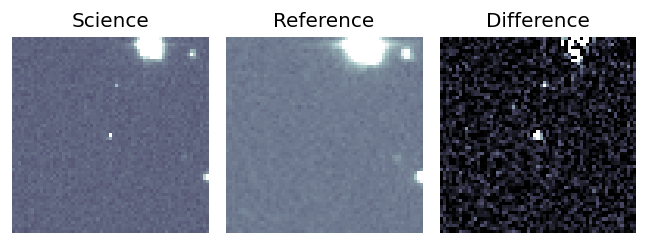
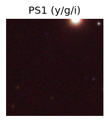
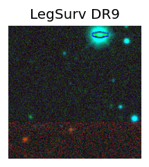
LegacySurvey: 1 sources in 3 arcsec Closest: d = 2.92 arcsec, 291.4 deg (east of north) photoz=0.92 (68% bounds 0.7, 1.11), type=REX peak abs mag = -25.3 (68% bounds -24.58, -25.82) 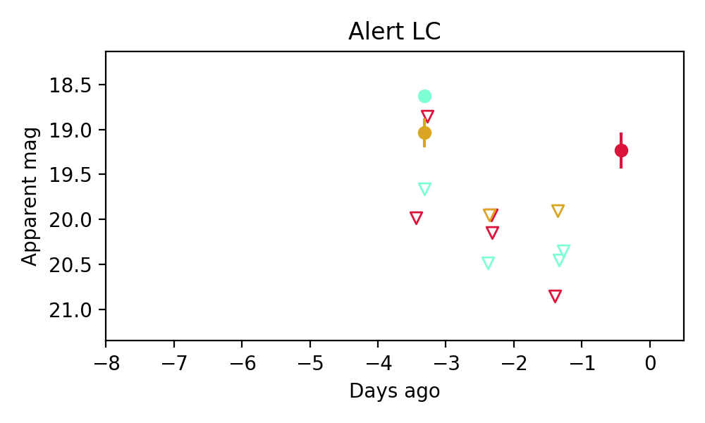
26. ZTF26aavqifa (FBOT?) [Back to Top] [Share] [Trigger Swift] [Fritz ] [Lasair ]RA, Dec: 184.98151, 26.856 12h19m55.56s, 26d51m21.59sGalactic (l, b): 213.35945, 82.97606 ext(g-r) = 0.026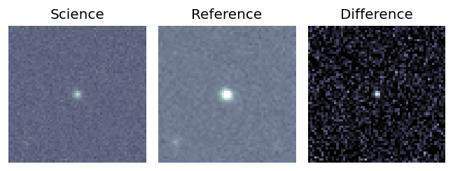
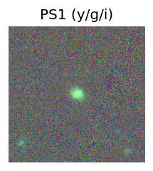
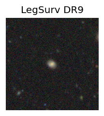
peak abs mag = -19.40 LegacySurvey: 1 sources in 3 arcsec Closest: d = 0.37 arcsec, 137.0 deg (east of north) photoz=0.23 (68% bounds 0.2, 0.25), type=SER peak abs mag = -19.64 (68% bounds -19.3, -19.9) 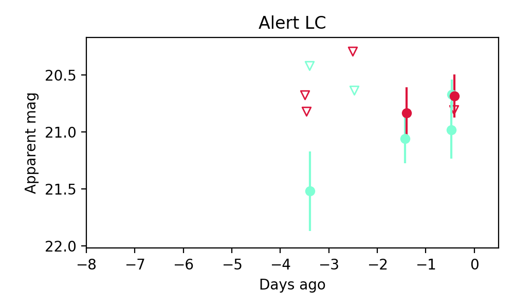
Consistent with synchrotron, g-r>0!
27. ZTF26aavqqtq (Afterglow?) [Back to Top] [Share] [Trigger Swift] [Fritz ] [Lasair ]RA, Dec: 224.78766, 12.13909 14h59m9.04s, 12d 8m20.73sGalactic (l, b): 12.63793, 56.54724 ext(g-r) = 0.038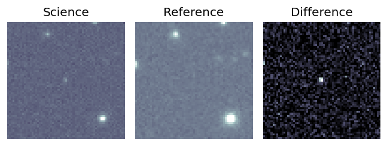
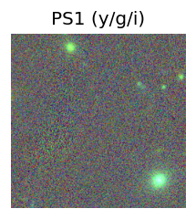
LegacySurvey: 1 sources in 3 arcsec Closest: d = 2.63 arcsec, 181.2 deg (east of north) photoz=0.63 (68% bounds 0.49, 0.81), type=PSF peak abs mag = -22.92 (68% bounds -22.29, -23.58) 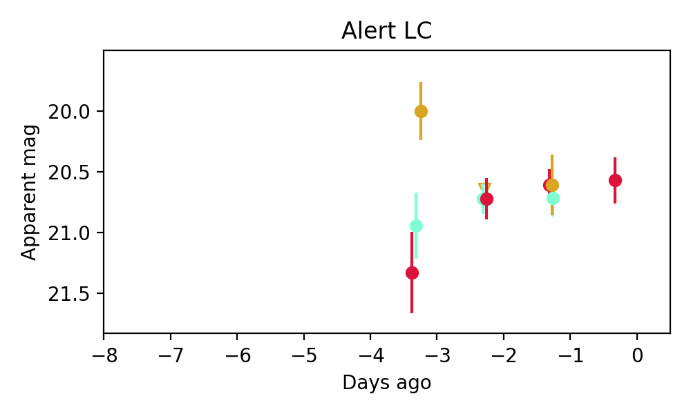
Consistent with synchrotron, g-r>0!
28. ZTF26aavqrhw (FBOT?) [Back to Top] [Share] [Trigger Swift] [Fritz ] [Lasair ]RA, Dec: 223.81917, 11.90807 14h55m16.60s, 11d54m29.06sGalactic (l, b): 11.36472, 57.23058 ext(g-r) = 0.031peak abs mag = -23.23 LegacySurvey: 1 sources in 3 arcsec Closest: d = 0.48 arcsec, 208.3 deg (east of north) photoz=0.96 (68% bounds 0.58, 1.63), type=PSF peak abs mag = -23.83 (68% bounds -22.47, -25.24) Consistent with synchrotron, g-r>0!
29. ZTF26aavrcwo (Afterglow?) [Back to Top] [Share] [Trigger Swift] [Fritz ] [Lasair ]RA, Dec: 202.35557, 78.80742 13h29m25.34s, 78d48m26.71sGalactic (l, b): 120.59812, 38.14816 ext(g-r) = 0.037PS1: 1 source in 3 arcsec Closest: d = 3.07 arcsec photoz=0.02+/-0.00 peak abs mag = -16.14 Consistent with synchrotron, g-r>0!
30. ZTF26aavrgaw (FBOT?) [Back to Top] [Share] [Trigger Swift] [Fritz ] [Lasair ]RA, Dec: 220.90451, 58.88563 14h43m37.08s, 58d53m8.27sGalactic (l, b): 99.25171, 52.77654 ext(g-r) = 0.011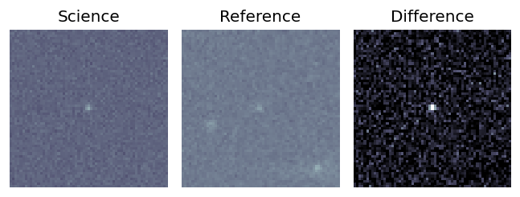
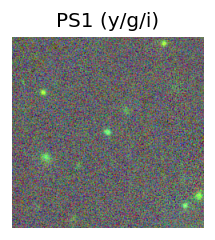
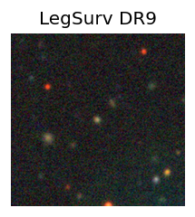
peak abs mag = -20.87 PS1: 1 source in 3 arcsec Closest: d = 0.33 arcsec photoz=0.48+/-0.19 peak abs mag = -21.76 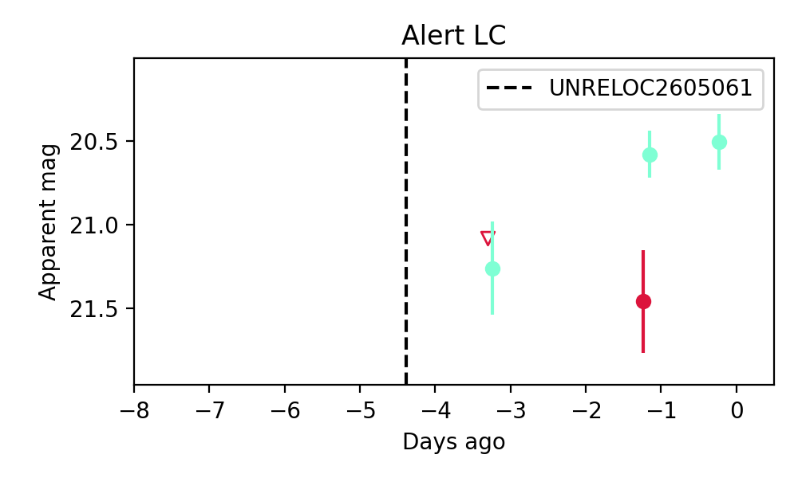
31. ZTF26aavstdi (Afterglow?) [Back to Top] [Share] [Trigger Swift] [Fritz ] [Lasair ]RA, Dec: 259.02039, -11.31931 17h16m4.89s, -11d-19m-9.52sGalactic (l, b): 11.31596, 15.26063 ext(g-r) = 0.746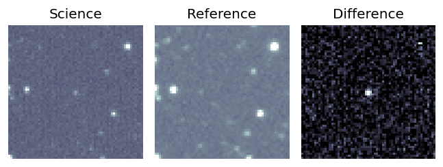
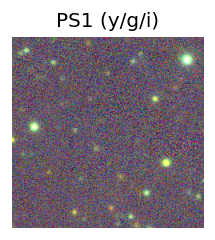
PS1: 1 source in 3 arcsec Closest: d = 6.81 arcsec photoz=1.35+/-0.32 peak abs mag = -26.83 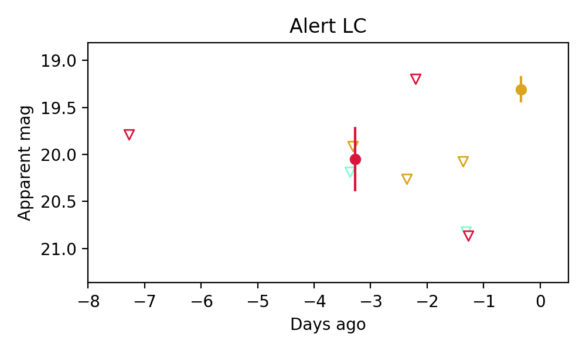
32. ZTF26aavudwo (FBOT?) [Back to Top] [Share] [Trigger Swift] [Fritz ] [Lasair ]RA, Dec: 250.06866, 26.30095 16h40m16.48s, 26d18m3.41sGalactic (l, b): 45.85742, 39.35605 ext(g-r) = 0.053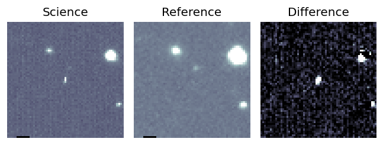
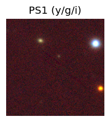
peak abs mag = -22.41 LegacySurvey: 1 sources in 3 arcsec Closest: d = 1.20 arcsec, 203.3 deg (east of north) photoz=0.84 (68% bounds 0.57, 1.12), type=PSF peak abs mag = -24.47 (68% bounds -23.45, -25.27)
33. ZTF26aavupoh (Afterglow?) [Back to Top] [Share] [Trigger Swift] [Fritz ] [Lasair ]RA, Dec: 278.73578, 33.95013 18h34m56.59s, 33d57m0.48sGalactic (l, b): 62.52237, 17.92324 ext(g-r) = 0.069
34. ZTF26aavvacj (Afterglow?) [Back to Top] [Share] [Trigger Swift] [Fritz ] [Lasair ]RA, Dec: 241.13347, -22.96222 16h 4m32.03s, -22d-57m-44.00sGalactic (l, b): 350.57065, 21.56288 WARNING: -2.13 deg from ecliptic plane ext(g-r) = 0.194LegacySurvey: 1 sources in 3 arcsec Closest: d = 2.67 arcsec, 164.4 deg (east of north) photoz=1.02 (68% bounds 0.72, 2.02), type=PSF peak abs mag = -24.68 (68% bounds -23.76, -26.51)
35. ZTF26aavvmbm (Afterglow?) [Back to Top] [Share] [Trigger Swift] [Fritz ] [Lasair ]RA, Dec: 287.55224, -20.01184 19h10m12.54s, -20d 0m-42.62sGalactic (l, b): 16.87627, -12.97114 WARNING: 2.43 deg from ecliptic plane ext(g-r) = 0.166